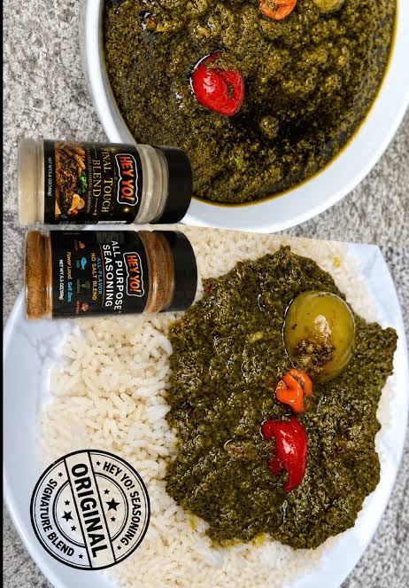

Pundu

pondu dish
Pondu also known as saka saka, is a beloved greens-based
stew made from pounded cassava leaves.It's highlights the absolute staple crop of
the region and is slowly simmered with an aromatic blen of vegetables
like leeks, onions and bell peppers, all enriched with vibrant red oil.
Often cooked with smoked fish or beef for added depth, Pondu
is a thick, highly nutritiouss, and comforting dish that accompanies nearly
every celebratory congoleseplatter.
Ingredients
- Ground cassava leaves
- Green bell pepper
- leeks
- Red palm oil
- onions
- smoke fish
- bouillon cubes
- garlic
- water
- salt
- Beef chunks
Cook Steps
- Blend or finele chop
green , onions , leeks and garlic together with a little bit of water until smooth
- place the thawed cassava leaves
into a large , deep cooking pot.and pour the blended vegetables mixture directly over the casaava leaves and add enough water
to the pot so that the leaves and vegetables mix are completely submerged.
- bring the pot to a rolling boil
put it on high heat without a lid to allow the raw flavor of the cassava leaves to vent out ,
then reduce the heat to meadium, cover the pot half way and let it cook for about an hour until the leaves soften and change to dark olive greeen color.
- crumble in the bouillon cubes
and season with salt to taste then stir in the smoked fish or meat
to add protein to the dish.
- pour in the red palm oil
- simmer uncovered
on low medium heat for another 15 minutes, cook until the liquid reduce
- remove from heat
let it rest for 10 minutes before serving alongside plantains or fufu.